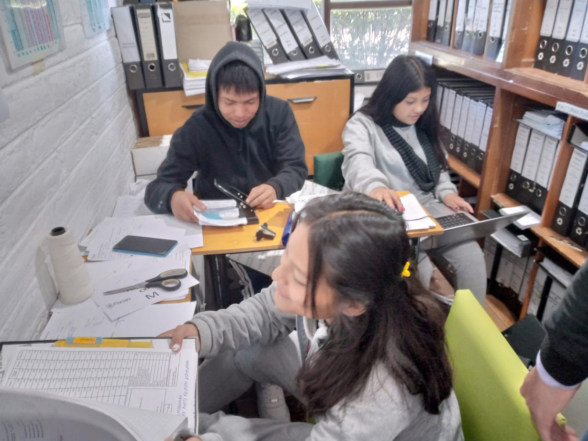

EXPECIENCIAS
EXPERIENCIAS DE PRACTICAS EN FLORSANI
Nombres y Apellidos: Julissa Calpa
Direccion Domiciliaria Florsani San Isidro
- Mi experiencia en el primer dia en la empresa de Florsani fue muy bonita ya que me toco en la area que yo queria ir, en contabilidad junto con mi compañera Emili, las dos estabamos muy nerviosas ya que no sabiamos como era el trabajo ahi y tambien teniamos mucho miedo porque habian muchas oficinas las cuales estaban divididas en ESTADISTICA,TALENTO HUMANO,ETIQUETAS, LOGISTICA,MANTENIMIENTO Y MAS.

- Al segundo dia el Ingeniero Don Beto nos dio una capacitacion sobre Archivos de comprobantes de Egresos,archivo de facturas, archivo de comprobantes de pago la capacitacion duro 25 minutos y luego ya nos pusimos a trabajar en la oficina de Archivos

- En la oficina de Archivos se encontraban demasiadas carpetas cada carpeta estaba ordenada por fechas y meses del año.
- En este dia realize la Verificacion de datos en el sistema Venture, de la Empresa de Novel, gracias a la capacitacion que nos dio el ingeniero Don Beto pude realizarlo todo muy bien sin ninguna complejidad, lo que tenia que realizar fue lo siguiente Aqui ingresamos a la pagina Venture. sirve para descargar facturas de gastos de la empresa y cada uno de
los vendedores. Lo que yo debía descargar cada una de las facturas con los comprobantes y poner el código que ya venía con su respectivo proveedor.
- En este dia tuve que estar sola verificando las facturas, como las verificaba? por medio de codigos, nombres, el valor total y por la fecha verificaba todo esos datos porque en unos casos eran los mismos compradores pero eran diferentes valores de pago, estas hojas tenia que encontrarlas en las carpetas que estaban archivadas en la oficina de contabilidad se divididan por meses del año y como ya estaban divididas por fechas era un poco mas facil de encontrar y con las hojas que encontraba tenia que volver archivar con la hoja de factura, la hoja de comprobante y la hoja de egreso en una carpeta y asi ytenia que hacerlo con todas las hojas

-